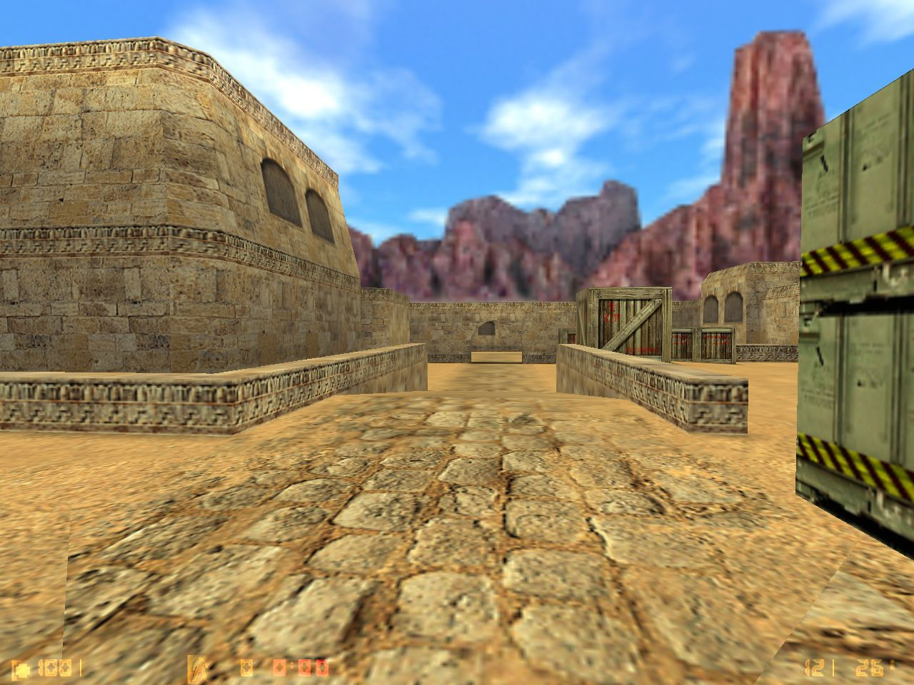

de_dust for Counter-Strike by Dave Johnston
Counter-Strike Beta 4, released 16 years ago - November 5, 1999
Bomb defusal (de_) maps were brand new! And dust looks funny with the old default Half-Life sky.
Kicking off a few days showing off the CS Beta 4.0 maps, already 16 years old!
Celebrating Goldsource Gold’s 2nd birthday by posting the best of!